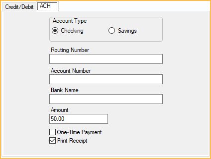

PaySimple
Use the PaySimple Payment Information window to take payments, add new cards, void a transaction, or process a return.
In the Payment window, click PaySimple.

Alternatively,
- In the Edit Insurance Payment Window, click PaySimple.
- In the Credit Card Manage window, add a card.
Website: paysimple.com. Only available to U.S. customers.
- Deleting a card in Open Dental will also delete the card in PaySimple.
- EMV transactions are not supported for PaySimple.
- Also see: PaySimple Setup
To automatically save new credit/debit cards and bank information to a patient's account after each transaction enable Automatically store credit card tokens in Preferences.
Credit/Debit Tab
Enter a patient's credit or debit card information in the Credit/Debit tab.

Transaction Type: Select the transaction type. (Not available when adding a card in the Credit Card Manage window.)
- Sale: A standard credit card charge.
- Auth: Add a credit card.
- Void: Reverse a sale soon after (same day) it was made. See below for details.
- Return: Reverse a sale one or more days after it was made.
Card Information:
- Card Number: Place the cursor in the field then swipe the credit card, or type the credit card number.
- Expiration (MMYY): Enter the credit card expiration date. When the card is swiped the expiration date will auto-populate.
- Security Code: Enter the security code from the back of the credit card.
- Name On Card: Auto-populates with the selected patient's name, or, when the card is swiped, the cardholder's name.
- Zip Code: Enter the zip code of the cardholder's billing address. When using a card on file, the zip code stored in Credit Card Manage window auto-populates this field.
Amount: The amount entered in the payment window. To edit, cancel the transaction and enter the correct amount in the payment window.
One-Time Payment: Determines whether a token is created and the card is saved in Credit Card Manage to use again later. Only available when adding a credit card while processing a payment.
- Checked: Card is used for the current transaction and is not be saved.
- Unchecked: Card is used for the current transaction, a token is created, and the card is saved.
Print Receipt: Automatically print a receipt to the default receipt Printer when the transaction is completed. Set as default in PaySimple Setup.
ACH Tab
Enter a patient's checking or savings account information in the ACH tab. An active registration key and eConnector is required.
Account Type: Select the patient's account type to be used for direct payment, Checking or Savings.
Bank Information:
- Routing Number: Bank account routing number.
- Account Number: Bank account number.
- Bank Name: Name of the bank.
Amount: The amount entered in the payment window. If adding the account from the Credit Card Manage window, the Amount field is not visible.
One-Time Payment: Determines whether a token is created and the card is saved in Credit Card Manage to use again later. Only available when adding a credit card while processing a payment.
- Checked: Card is used for the current transaction and is not be saved.
- Unchecked: Card is used for the current transaction, a token is created, and the card is saved.
Print Receipt: Automatically print a receipt to the default receipt printer when the transaction is completed. Set as default in PaySimple Setup.
When an ACH transaction is processed, the payment status will be marked as Posted (pending) in the Payment Note. Once the transaction is settled with the bank, update the payment amount and status if the payment is declined. To automatically update the payment status (e.g., Settled or Failed), navigate to the PaySimple Setup program link, re-open and click OK. This one time step will enable automatic status updates.
Process a Void
Payments or returns can be voided when the original transaction was processed in the last 24 hours and has not been deposited to the practice account. Voiding removes the original transaction from the patient's bank the same day. If the transaction is older or has been deposited, return the payment instead. Returns require a few days to process. See Credit Card Return.
To void a PaySimple transaction:
- Locate the transaction to void. In the payment note identify the Ref Number and payment amount.
- In the patient's Account Module, click Payment.
- Enter an amount matching the original transaction.
- If voiding a payment, enter the amount as negative (e.g., -25). Alternatively, right-click the original payment, choose Refund, and go to Step 5.
- If voiding a refund, enter the amount as a positive (e.g., 25).
- Click OK to open the Payment.
- If using Clinics, select the clinic of the original payment.
- Allocate Payment Splits to the production (i.e., procedures, adjustments, or unearned income types) of the original payment. See Paysplit Revise.
- After verifying the paysplits, Click PaySimple to open the PaySimple window.
- Enter the transaction information, using the same information as the original transaction (PaySimple needs this for verification purposes).
- Select Void as the Transaction Type.
- Ref Number (i.e., PaySimple Transaction Number)
- Card Number, Expiration Date, and Security Code.
- Click OK to process, the payment window will immediately close.